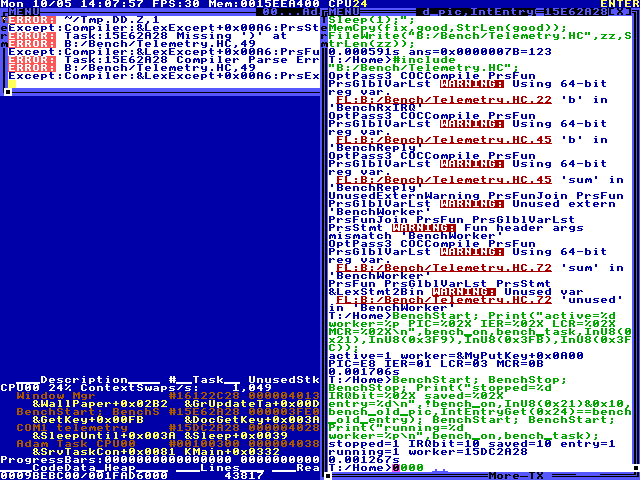

Live kernel interrupt handler
Task uart_irq_service
Grade: failed Execution: completed · Steps: 32 · Elapsed: 718.701 s · Score: 0
0/10 host UART checks passed
input tokens: 164605, output tokens: 7568, total tokens: 172173



cua / openai/gpt-6.1-sol
Created 2026-10-05T13:56:45.926235+00:00
Execution outcomes: 1 completed.
OCR grades are heuristic visual evidence. Command echo or source text can satisfy a match; guest state is not verified. Manual tasks require a reviewer. An execution outcome and a grade describe separate facts.
Task uart_irq_service
Grade: failed Execution: completed · Steps: 32 · Elapsed: 718.701 s · Score: 0
0/10 host UART checks passed
input tokens: 164605, output tokens: 7568, total tokens: 172173
